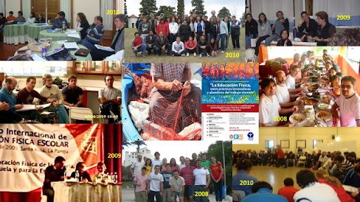

Red Internacional de Investigación Pedagógica en Educación Física Escolar REIIPEFE
Desde 2008 trabajamos en colaboración sostenida y sistemática con colegas de universidades brasileñas problematizando e investigando la Educación Física escolar y la formación docente en el campo.
En 2008 la Universidades Federal de Espírito Santo (Brasil) convocó de la mano de Valter Bracht al I Seminario Internacional de Investigación Pedagógica en Educación Física escolar, en el que el colectivo Praxis comenzó a participar. La REIIPEFE con su denominación actual, se constituyó formalmente en 2010 en la localidad de Ascochinga (Córdoba, Argentina) durante el III Seminario Internacional de Investigación Pedagógica en Educación Física escolar organizado por Praxis en el Instituto Provincial de Educación Física (Ipef). Ser parte de los grupos fundadores, nos ha permitido ampliar la producción científica y académica, el trabajo en proyectos de desarrollo social, los vínculos con nuevas instituciones, grupos latinoamericanos, personas, intercambios de docentes y estudiantes, entre otros múltiples beneficios.Para conocer los grupos e instituciones que conformamos la REIIPEFE pueden asomarse al siguiente enlace. https://www.reiipefe.org/
